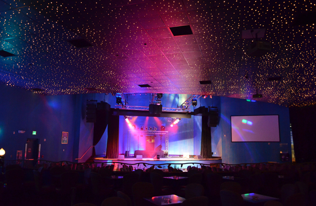
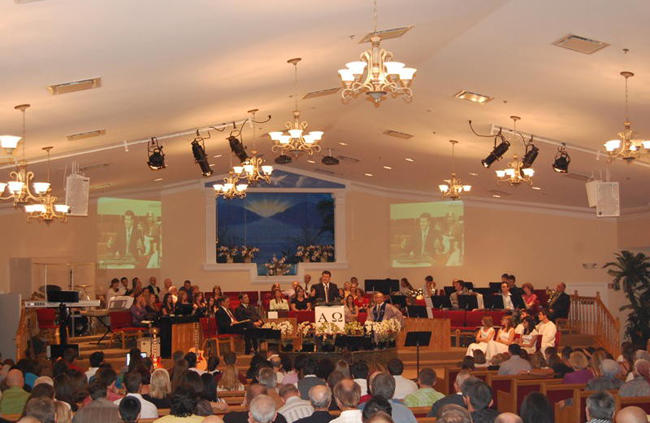
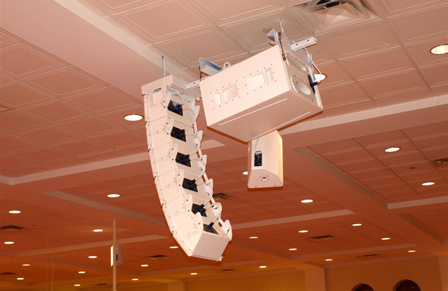
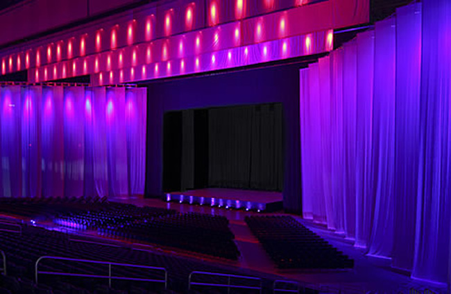
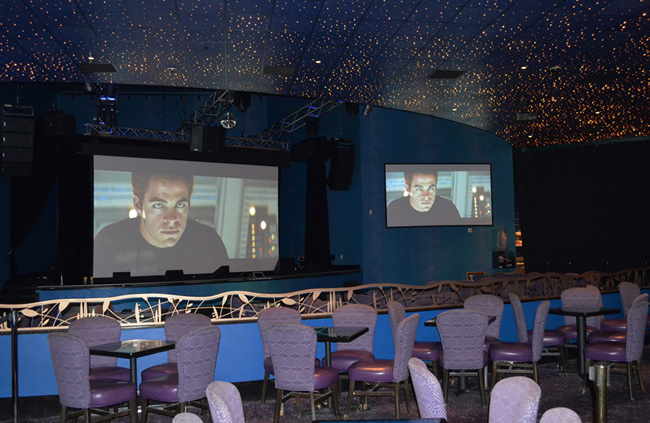
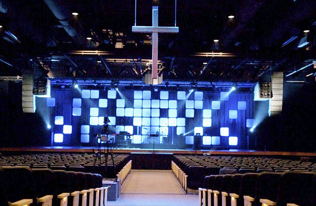
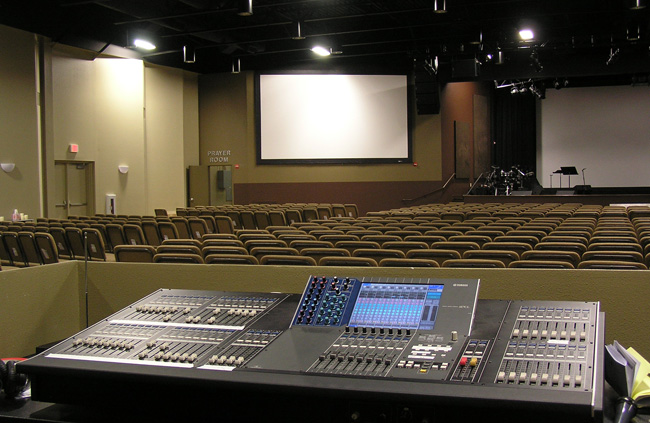
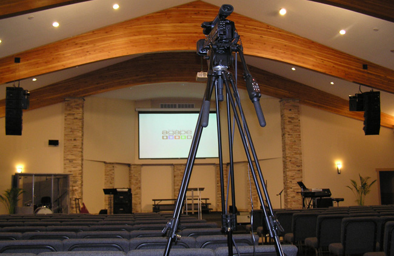

List of Projects
-
X
- High End Sound With Low Visual Impact
- Multiple Venue Campus
- Volunteer Friendly Digital Console
- Church with Networked Cat5 Control
- 7,000 Seats on Three Levels
- Church with a Tight Budget
- NEXO 7.1 Surround Sound
- Dual Purpose Worship / Concert Space
- State of the Art Worship Center
- Worship Center Makeover
- Atrium Cafe Sound Design
- High Performance Sound System with Low Visual Impact
High End Sound With Low Visual Impact
Tulalip Casino Resort, Tulalip, Washington
The Destinations Lounge at Tulalip Casino Resort in Tulalip, Washington required a simple, easy to operate system with uniform, high quality sound. To maintain the atmosphere in the lounge the sound system also needed to have a very low visual impact.
- ✔ High end sound
- ✔ Uniform stereo at every seat
- ✔ Very low visual impact
- ✔ Simple easy operation
The challenge on this project was to provide superior, uniform high end sound throughout the space with minimal visual impact and without the need for an experienced audio engineer to run the system. Fortunately, The Yamaha Commercial Installed Solutions (CIS) product line was created specifically for situations like this where there may not be an experienced audio operator running the system.
"We knew that this system needed to be high end and sound crystal clear at all listening levels, while maintaining the aesthetics of the space," states Aaron Jackson, Audio Visual Technical Engineer, at Tulalip Casino.
The wide dispersion of the Yamaha CIS speakers allowed this to be accomplished without cluttering the ceiling with a lot of speakers. Surface mounted speakers were used for the entry and placed between suspended ceiling panels. The Yamaha speakers are compact enough to be completely hidden, offering pleasing sound with a very low visual impact.
"Our Destinations Lounge system sounds amazing through the entire spectrum and has beautifully uniform coverage in every seat. We have come to expect that when we buy a Yamaha product; it’s going to work, it’s going to look great, and it’s going to sound amazing. Bottom line for us is, Yamaha has struck the perfect balance of price and quality." Aaron Jackson, Audio Visual Technical Engineer, at Tulalip Casino.
Equipment Installed
Close Article . . .
Multiple Venue Campus
Oak Hills Church, San Antonio, Texas
200, 500, 1880 Seats
Does one size fit all? Of course not! That is why Clarity Media Group designed custom solutions for each of the venues at Oak Hills.
- ✔ 200 seat space
- ✔ 1800 seat multi-purpose room
- ✔ 500 seat with uniform sound challenge
1800 Seat Multi-purpose Room -Crown Ridge (2008)
The challenge on this project was that because the room was multi-propose the acoustics were far from ideal. However, with careful design, computer modeling, and the NEXO 1230 speakers Clarity Media Group was able to design a system that resulted in a +/-1db sound level throughout the space.
Equipment Installed
- (12) NEXO 1210
- (2) CD-18 Subs
- (2) PS-15
- Yamaha T5N amps with digital processing done by the NEXO NX-242
500 Seat Uniform SPL -North Central Campus (2010)
The challenge on this project was similar to the challenge with the multi-purpose room - how to get as uniform SPL as possible.
Equipment Installed
- (1) Yamaha LS9-32
- (1) NEXO PS-10
- (1) NEXO LS500 Sub
- (1) Yamaha CM10 Monitors
- (1) Aviom Personal Monitor System
- (1) Lighting System-a Jands Vista M1 was used to control all the optipars and LED lighting fixtures
200 Seat Space- Crown Ridge Auxilary Room (2010)
The challenge was to come up with a sound system appropriate to a small space. Previously the room just had some speakers mounted on a pole. The new equipment speakers are Toa HX-5.
Close Article . . .
Volunteer Friendly Digital Console
Elim Romanian Church of God, Hollywood, Florida
Many churches rely almost exclusively on volunteers to run the sound system including Elim Romanian Church of God Hollywood, Florida. Is it possible to have a state of the art sound system that even volunteers can easily use? Absolutely!
One of the strengths of Clarity Media Group is our long history of mentoring church sound technicians including volunteers. Over the years we have developed a clear understanding of what is reasonable to expect a volunteer to be able to master. With the advent of digital consoles, you can have a standard setup saved so even if everything gets messed up you can always reset it back to a known condition.
Equipment Installed
- (2)NEXO PS-15
- (1)Yamaha LS9-32
Close Article . . .
Church with Networked CAT5 Control
Bethany Romanian Church, Chicago, Illinois:
A complete makeover / upgrade of the system including console, speakers, mics and amps for Bethany Romanian Church in Chicago.
Key Features
- ✔ The monitor speaker system is a combination of Yamaha IF-2108 and IF-2208
- ✔ Using the new MyMix monitoring system, musicians are able to record the practice on a standard SD card and take it home to rehearse the songs playing along with the other instruments.
- ✔ A single piece of Cat5 cable controls 56 input channels and 32 output channels.
- ✔ To provide superior micing of the choir, Audix M1255B high gain choir mics were suspended from the ceiling.
- ✔ To blend in with the background, all the speakers were custom ordered in white.
Equipment Installed
- (1) Yamaha M7CL-ES console
- (10) NEXO Geo-s805 line array
- (2)NEXO Geo-s830 line array
- (2) NEXO CD-12 subs
- (2) NEXO PS-10
- (4) NEXO PS-8
- The main PA was powered by (1)NEXO 4x4 amp and (1)NEXO 4x1 amp
- (20) Audix M1255Bmics
- (13) channels Shur SLX Wireless
Close Article . . .
7000 Seats on Three Levels
Alamo Dome Illusions Theatre, San Antonio, Texas
The Alamo Dome Illusions Theatre presented a unique challenge: how can you cover a seating area of 7,000 people on three levels with high fidelity and uniform sound?
The answer is a NEXO line array.
The system consists of:
- (10)NEXO Geo S-1210
- (2)NEXO Geo S-1230
- (8)PS-10
- (3)NEXO 4x4 amps
The result is a system with more than enough power to handle just about any performance without any seat being too loud or too soft.
Close Article . . .
Church With a Tight Budget
300 Seats
Just because you have a limited budget does not rule out getting a high quality sound system.
Clarity Media Group was able to design a first rate sound system for the 300 seat First United Methodist Church in Kerrville, Texas that stayed well within their budget.
Equipment Installed
- (1) Yamaha LS9-32 Console
- (2) NEXO PS-10
- (2) NEXO LS-600 Subs
- Powered by one NEXO 4x1
NEXO 7.1 Surround Sound
480 Seats
The Tulalip Resort Casino in Tulalip, Washington wanted to upgrade their 480-seat Canoes Cabaret nightly entertainment lounge to a full 7.1 surround sound system and a NEXO line array system.
Clarity Media Group was able to simplify the design that had been developed by another vendor which not only reduced the cost but also enhanced signal integrity. Clarity Media Group uses a simplistic and precise approach to design and installation.
"If a component, such as an additional DSP, can be omitted from the signal chain, that will help maintain a more natural sound. Systems that rely on extensive signal processing have a harsher sound which is less pleasing to the ear. We believe that if you design the system correctly in the first place it will not need to be processed at all, resulting in a more natural sound that is very pleasing to the ear."
~Travis Cibolski, co-owner of Clarity Media Group
The modified design developed by Clarity Media Group consisted of:
- (15) NEXO GEO S1210 cabinets - full range boxes
- (2)NEXO RS18 subs flown - one per side in cardioid mode
- (2) NEXO GEO S1210 vertical line arrays for left and right
- horizontal center channel
- (4) individual NEXO GEO S1230 cabinets-for the surround channels
- The system is powered by NEXO NXAMP 4x4s
One of the challenges with this design for this space is that the bartenders in the back of the lounge had trouble hearing people order because of the volume level with the previous system. Careful design and placement of the GEO S12 cabinets made it possible to control and manipulate the SPL throughout the room resulting in a uniform sound level in the main area while ate the same time dropping the SPL 3db in the bar area. Needless to say, the bartenders have been very happy with the change.
Another challenge was that the Casino management wanted to avoid having too much sub bass in the main entrance area. To achieve this, Clarity Media Group used the cardioid qualities of the RS18 to steer sub bass away from the entrance while providing powerful bass response in the listening area.
Presently the room does not utilize a monitor console. However, because all of the components are networked via EtherSound including amps, it will be very easy to add a monitor desk down the road. One additional feature is that you can control the entire system directly from an iPad.
The upgrade the Casino wanted included not only sound but video as well. The new design by Clarity Media Group included four Dalite screens systems. The main screen is a 1.5 gain, 18 ft wide tensioned electrol. The projectors are all Eiki 1080p projectors and just like the sound system they can be controlled via an iPad. With the new enhanced screens and projectors, the casino has been able to add sporting events with different games on various screens, increasing the usability of the space which has increased patronage and revenues.
Close Article . . .
Dual Purpose Worship | Concert Space
1500 Seats
Christ The King Church - Bellingham, Washington upgraded their speakers and amps. The very low ceiling height presented a real challenge in design to get a very uniform sound sipersion across the entire room. The new system is volunteer friendly but has all the power and features for professional concerts.
Key Features
- ✔ Left and right line arrays to provide uniform sound without visually detracting from the stage
- ✔ Center center cluster is tucked away very discretely above the pastor’s podium position
- ✔ Despite a low trim height the NEXO system delivers uniform, transparent sound to all areas, and with full bandwidth.
- ✔ Volunteer friendly digital console (existing customer console)
Equipment Installed
- Yamaha M7CL-48 digital console at front of house (existing)
- (8) NEXO GEO S1210 boxes per side
- (4) NEXO GEO S1230 boxes for the center cluster
- (4) NEXO RS18 Ray Sub cabinets flown, two per side in cardioid mode
- The main PA is powered by (2) NEXO 4x4 amps and (1) NEXO 4x1 amp
Close Article . . .
State of the Art Worship Center
800 Seats
Sonrise Church in Hillsboro Oregon needed a sound system to go with their new state of the art worship center. Clarity Media Group designed a cutting edge audio package featuring the new Nexo Geo S12 speaker system.
The newly released Geo S12 represented the latest innovation in speakers from Nexo. For amazingly clean and accurate low frequencies, the design includes a pair of Nexo GeoSub Cardoid Subwoofers which create amazingly clean and accurate low frequency while eliminating much of the sub bass directed toward the stage. The result is a room with extremely consistent sound throughout the space as well as excellent clarity and fidelity.
Also included with the package was a Yamaha M7CL-48 touch screen mixing console, new Yamaha Tn series power amps which provide excellent efficiency, Yamaha IF2108 series monitors, and a complete compliment of Aviom personal mixers for the band.
Close Article . . .
Worship Center Makeover
350 Seats
Agape Bible Church in Portland Oregon contacted Clarity Media Group to do a retrofit design for their new worship space. The church wanted a state of the art solution which worked with the existing structure of the church. The scope of work included sound, video projection, lighting, and Imag (image magnification).
Clarity delivered a streamlined, state of the art facility which went well beyond the churches expectations. Included in the design was a Nexo GeoS line array system which included CD12 cardioid directional subwoofers, and a Yamaha LS9-32 mixing console. Also included was a high power, wide screen projection system complemented by Sony high definition cameras and a complete live video suite.
"I am very pleased with the work of Clarity Media. They have provided exceptional service and support whenever we needed it. Clarity Media has proven many times over that they are knowledgeable with all those different applications and their professionalism has exceeded my expectations."
~Ezekial Trifan, Music Director, Agape Bible Chuch, Portland, OR
Close Article . . .